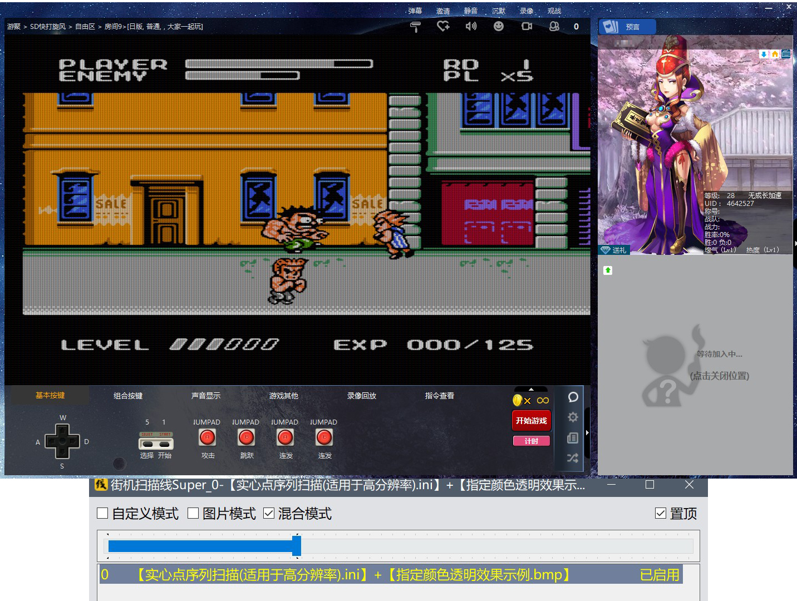
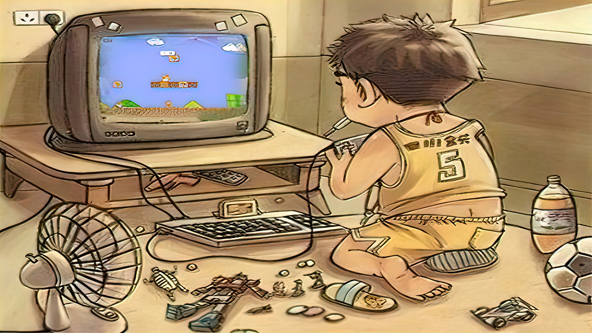

新动态：电玩街机[全新机台，对比旧版资源使用率更低，声音模拟更完善]已上线[浏览器跨平台游玩，支持电脑端、手机端、平板、电视盒子等平台设备...]支持自定义按键，支持手柄、键盘等外设输入！
站点公告：本站为非盈利性质个人站点，必然偶尔会发生无法访问的情况，介时还请多多理解，尽量第一时间恢复访问！
作者：感谢所有支持过本站的朋友们！愿天黑有灯，下雨有伞，平安幸福度一生！
无事阁原创软件_作者：不找事儿
★ 本站网址 ★ www.buzhaoshi.top ★ 或 ★ buzhaoshi.top ★
街机扫描线Super_正式版_2021003_液晶屏秒变CRT_DIY街机神器_怀旧
动态：新版本的 街机扫描线Super_正式版 已发布！在此，感谢支持过街机扫描线的朋友们，愿笑口常开！^^
软件简介：使用街机扫描线会有一种身临街机厅的怀旧感觉，因为它可以模仿出街机荧屏的效果，可以对马赛克进行一些优化，使得街机游戏的画面看起来更加清晰唯美。软件自带多种扫描效果并配备截图功能，如果觉得不满意还可以通过【自定义模式套件】来配置出任意一种线性扫描效果，理论上任何程序都可以使用它来进行扫描，软件的工作原理是首先绘制出扫描线条，然后再覆盖到程序窗口的上层来达到扫描的效果。有很多网络视频并不是很清晰，用它来观看，效果也会有一定的提升。
软件特色：智能吸附窗口，与某些截图软件的吸附功能一样，使用起来非常方便，进入吸附状态时多种颜色随机选取，美观大方。支持自定义线性扫描、自定义视觉效果扫描(图片模式)，混合模式(图片效果与线条效果的扫描同时进行)，理论上此软件的视觉效果绝对可以多的不像话。
版权声明：在不修改软件内容的前提下，可以随意传播与使用本软件。
如果你喜欢这款软件，可以通过软件托盘菜单的“支持作者”来请我喝瓶啤酒，多份支持，多分坚持！
注：软件各功能详情请参考站内的【街机扫描线Super帮助文档】
获得最新版本：由于本站点已迁移，固原始更新地址均已失效，可到 【http://www.buzhaoshi.top】 或 【http://buzhaoshi.top】 作者主页查看各软件的更新动态
【最新_街机扫描线Super_正式版_2021003】附件下载： arcscanline2021003.rar
更新日志：2021003对比2021002版本
1.增加了“自选区域截图”截取自身的功能 该功能可在菜单里配置开与关
2.修复了“程序配色”按钮在“自选区域截图”后不能启用的问题
3.修复了使用“程序配色”后 在没有重启程序的情况下颜色显示不正确的问题 现在不需要重启程序了
4.修复了“自选区域”在选区里按键无效所导致无法截图和锁定窗口的问题
5.修复了 框选区域的过程中可按键锁定的问题 需框选完成后按键锁定
6.修复了 扫描区域锁定后：“自选区域截图”选区以后 按“退格键”或“ESC”键会自动退出扫描模式回到程序主界面的问题
7.调整了“自选区域截图”格式选择界面的背景颜色 这样看起来更清晰
8.去掉了选项菜单中的“智能吸附”与“自选区域”两项与主界面重复的功能按钮
9.优化了窗口大小和位置记录的逻辑
10.调整了选项菜单的排列顺序
儿时梦想已不再 偶尔怀旧也不错
街机扫描线Super_正式版的软件预览截图：
自带多种扫描效果随意调整窗口尺寸(含记忆功能)：
可随心所欲更换自己喜欢的颜色：
应用到游戏上“混合模式”的效果图与效果名称：
在游聚平台的几种效果展示：
1.ARC类型游戏效果展示与效果名称
2.MD类型游戏效果展示与效果名称
3.FC类型游戏效果展示与效果名称

以下为更新历史记录：
【旧_街机扫描线Super_正式版_2021002】
更新日志：2021002对比2021001版本
1.修复了任务栏显示不正常的问题
2.优化了一些场景中按钮的“启用”和“禁用”
3.修复了“自选区域”锁定窗口后“空格键”的问题
4.独立(不再需要设置)“图片模式”中“预览图片”的显示方法 可以更清楚的显示预览图
5.优化了从其他模式切换到“混合模式”时效果列表的显示 更加干净利落
6.升级优化了截图功能 可通过菜单设置图像深度 共支持六种位数 分别为 1 4 8 13 24 32
7.在“扫描区域截图”功能中去除了“TIFF”格式 现支持四种储存格式 分别为 bmp jpg gif png
8.增加了“自选区域截图”该截图功能自由度较高且不会截取程序自身
9.在“自选区域截图”功能中同样支持四种储存格式 分别为bmp jpg gif png
10.增加了截图后“自动预览功能”该功能可通过菜单关闭
11.增加了“扫描区域截图”完成截图后会打开对应文件夹的功能 该功能可通过菜单关闭
12.在“程序配色”中增加了自选区线条颜色的配置 包括“自选区域截图”与“自选区域”中线条颜色的显示 将“自选区线条色”设置为 RGB(212,2,254)可隐藏线条框
13.增加了一张效果示例图片素材
14.此次更新较多 若需“覆盖旧程序(旧版的街机扫描线)”升级 请务必删除“Config”文件夹以避免程序不能正确读档而导致未知的错误
【旧_街机扫描线Super_正式版】
更新日志：2021001版本对比831版本
1.添加并点亮了“自选区域”功能按钮 现在可以自选区域了
2.“自选区域”的提示功能可通过菜单“自选区域提示”关闭
3.添加并点亮了“扫描区域截图”功能 支持五种图片格式
4.添加了“程序配色”功能 现在可以配置自己喜欢的颜色了
5.菜单中“软件介绍与帮助”的链接指向软件主页的“帮助文档”页面
6.修复了一些小问题 此版本由测试版更新为【正式版】
【旧_街机扫描线Super_测试版】
更新日志：831版本对比618版本
1.点亮了混合模式按钮，现在可以使用混合模式了，使用方法：只要在自定义模式列表和图片模式列表中启用了效果文件，混合模式列表中就会展现出 "已启用" 的两种效果加以混合
2.由之前只支持一种图片格式(png)，额外增加了一种支持的格式(bmp),现共支持二种图片格式
3.支持预览图片模式列表中的图片文件，右键列表-预览效果图片，在图片的显示方式为 "缩放" 时，此预览功能可以看清楚小图片的细节部分
【旧_街机扫描线Super_测试版】
更新日志：618版本对比528版本
1.修复了上一版本(528)的已知问题
【旧_街机扫描线Super_测试版】
更新日志：528版本对比522版本
1.在高级配置选项中增加了更换效果列表中字体大小的选项
2.在高级配置选项中启用了各项恢复默认的功能
3.优化了托盘菜单【更换效果(返回)】的视觉效果
已知问题：在软件起始界面，点击最小化以后，再右击托盘呼出功能菜单点击【关闭并退出】，再次启动后没有显示界面了
临时解决方法：点击最小化以后不要再在托盘功能菜单中点击【关闭并退出】。若已经出现此情况，请在软件根目录，打开【[软件所在目录]\Config\】文件夹，用记事本打开Config.ini，将【L=-32000】【T=-32000】手动改为【L=0】【T=0】后保存，再次启动软件即可，此问题将在下次更新中得到解决
【旧_街机扫描线Super_测试版】
更新日志：522版本对比514版本
1.修改了软件记录启动位置的方法
2.略微调整了一下效果列表中被选中效果标题的颜色
【旧_街机扫描线Super_测试版】
更新日志：514版本对比510版本
1.修复了在图片模式 已锁定窗口区域的状态下 托盘-右键呼出功能选项-【移动或调整尺寸】不更新扫描效果的问题
2.在托盘功能菜单增加了置顶按钮 此功能等同于窗口内右上角的置顶选项
【旧_街机扫描线Super_测试版】
更新日志：510版本为【街机扫描线Super】的第一个测试版本
注意(补充)：如果操作系统为windows10，建议将 "DPI缩放" 设置一下，这样可以避免因程序被缩放而造成文字不清晰和某些扫描效果不正确的问题，设置方法可参考下图：

=============================
目前，本程序仅支持“窗口”或“窗口全屏化”的扫描，计划在下个版本推出“强制置顶”功能以完成支持部分应用的全屏化扫描，原理是只要被覆盖的程序全屏后不会持续的检测自身是否处于置顶状态，那么下一个版本的“街机扫描线Super”就完全可以完成全屏化置顶的扫描，预计下一个版本将在2021年底前完成发布
新版本已发布_站内直通车：【New】街机扫描线Super_正式版(2021009)_把你的街机荧屏搬回家
再次感谢支持过街机扫描线的朋友们，献上童年怀旧图一张，愿笑口常开！^^

儿时无忧无虑的童年才是最开心最快乐的
★ 本站网址 ★ www.buzhaoshi.top ★ 或 ★ buzhaoshi.top ★